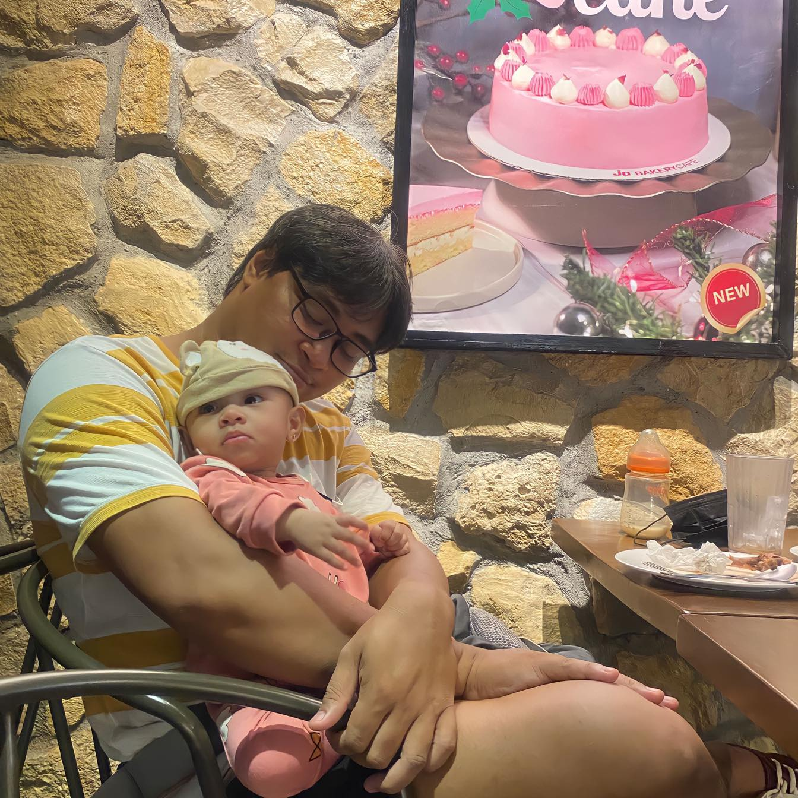

About Me

Born in 1990. Grew up in the province of Aklan which is famous for its beautiful Boracay island. Happily married. Been working from home since 2021.
I’m Edwil StaMaria, a Bachelor of Science in Information Technology graduate from Kalibo, Aklan.
I am currently working as an Accounting Support Specialist for a US-based staffing company.
Proficient in Graphic Design and experienced in scripting for MMORPG like Ragnarok Online.
I enjoy a nice cup of coffee, watching zombie movies, playing MMORPG, and spending time with my 8-month-old daughter.
I’m aiming to be a brilliant Full-Stack Web Developer.